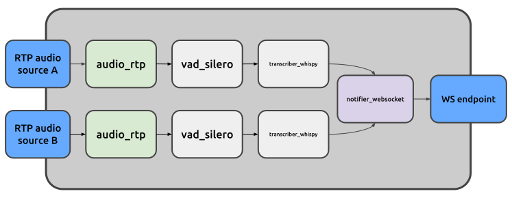

A prime example of how Juturna can be used in the real world is to transcribe live audio content, and make transcriptions available for other kind of tasks like translation or summarisation.
Whilst it is very likely for such a use case to involve remote entities and services, we can still design and build everything from scratch on our machine, setting up one or more audio sources, a transformation pipeline, and the final destinations of the generated content.
Let’s get to it!
We assume here two distinct remote RTP audio streams are being sent from a remote source. This could be, for instance, a Janus stream forward directed to our machine. Whatever the case, we want to catch those audio data, and transcribe their voice content. Once the transcription objects are available, we want to send them to a remote destination, where a websocket server is listening.
In a case like this, the pipeline structure might look like the image below.

Here we have:
source A and source B, both providing RTP audio streams - these are not part of the pipeline itself, but we’ll need a way to simulate them if we want to properly test the transcription;
two source nodes of type audio_rtp, one for each audio stream;
two voice activity detectors of type vad_silero, one for each audio
stream;
two transcribers of type transcriber_whispy, one for each audio stream;
a websocket notifier of type notifier_websocket, that will send all the
transcription objects from both streams to a remote destination;
a websocket endpoint that receives the trnascriptions.